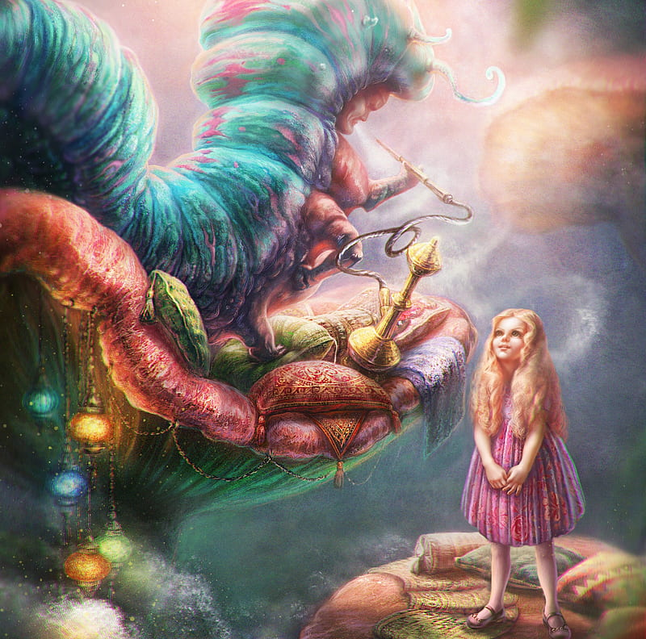

Аниэла дождалась пока грохот автомобиля, влекомого на веревочке, прокатился по лестнице, чтобы продолжиться дальше на асфальте. Причесалась, послюнив палец провела им по бровям - и таким образом приукрасившись, тихо спустилась по лестнице, стараясь не хлопать туфлями.
В полинявшем квадратном холле на первом этаже, напротив зеркала, гардероба и телефона находились ещё двери. Солидные, запертые, с блестящей табличкой "Лигия Мушиньска" - они отделяли от внешнего мира апартаменты тётки Лили. Латунная ручка с резной головкой, уместившаяся по правую сторону от дубового косяка, была по-видимому рычагом механического звонка. Аниэла позвонила.
– О? - сказала тётка Лиля, появившись в дверях. Из тёмной глубины за её плечами повеяло каким-то странным ароматом. Пани Лиля была одета в широкий халат оливкового цвета, запачканный красками. Короткие седые волосы, на этот раз не укрытые платком, торчали на все стороны как от порыва сильного ветра. В худой руке пожилой дамы виднелась кисть, и ещё две торчали из кармана халата.

– Слушаю, - её глаза были светлы и холодны как две горки льда. На Аниэлу снизошло вдохновение. Интуиция подсказала
ей не представляться сразу, но призвать на лицо выражение живой заинтересованности.
– Кажется, я помешала? Пани работает? - спросила, улыбаясь своей наимилейшей улыбкой. Старшая пани подняла брови и
иронично изогнула уголок рта.
– В этом доме никто не считается с тем, работаю ли я. Тут каждому можно шуметь, даже если у меня вдохновение, или
проще выражаясь, желание поработать. Рисую я там себе или нет, это просто зависит от психики.
Милая неожиданность. Аниэла-то сперва подумала что пани Лиля красит оконные рамы.
– Хотелось бы посмотреть картины пани.
Тонкие брови, слегка подведённые карандашом, поднялись ещё раз.
– Хм, ну что ж... в принципе не могу пожаловаться на столпотворение в моей студии... хотя с другой стороны...
– Я тоже немного рисую, - поспешила соврать Аниэла. Ей ещё не приходилось колебаться в такой ситуации. Цель
оправдывает средства. В очах тётки Лили появился блеск приязни.
– Правда? - спросила уже совсем другим тоном.
– Акварель, - коротко пояснила Аниэла.
– Прошу, прошу заходите, - пани Лиля попятилась с приглашающим жестом, овеивая Аниэлу запахами табака и скипидара.
Ведя гостью по тёмному коридорчку выражала сожаление по поводу того что акварельная техника в наши времена пришла
в упадок. - Прошу, - отворила двери комнаты, - здесь моя студия.
Студия была малой комнаткой с окном на юго-восток, умещённым в полукруглой нише, и большим запылённым белым фортепиано, загромождающим пространство у двери. Боковые стены, покрытые тёмными обоями, были завешены множеством старых фотографий и картинами, которым Аниэла не уделила внимания, поскольку её целиком захватило полотно, стоящее на мольберте около окна. Если все картины тётки Лили были выполнены в том же духе, то у Аниэлы уже сложилось представление об истинном характере старшей пани, так умело скрываемом под маской грубости и холода. Картина - не вполне ещё завершенная - была полна тепла и красоты. Изящно наложенные краски поблескивали свежестью. Посерёдке холста нарисован был красноватый гриб, на шляпке которого в ленивой позе возлежала толстая, синяя гусеница, курящая кальян. На фоне виднелся тёмный лес, полный выглядывающих из-за деревьев крошечных гротескных существ, а в конце уводящей вглубь дорожки стоял домик с жёлтыми окошечками. Написано это было мастерски. Гусеница имела саркастический блеск в светящихся глазах и пускала неровные колечки дыма из кальяна. Аниэла была искренне восторжена.
– Льюис Кэррол с ума бы сошёл от радости, - сказала она.
– Говоришь: Льюис Кэррол? - быстро спросила пани Лиля.
– Говорю.
– Охо.
– Простите?
– Нет, ничего. Милое ты дитя, и весьма умная. Будешь пить чай? Как раз заварила.
– Очень охотно, - согласилась Аниэла с энтузиазмом. - А можно посмотреть и другие картины?
Тетка Лиля в радостном смущении вытащила из угла несколько полотен и расставила их у стены, после чего пошла в соседнее помещение, где была кухня. Аниэла осталась на месте, разглядывая "Чаепитие у Шляпника" и бессознательно анализируя доходящие с кухни отзвуки и запахи. Пахло оттуда не только скипидаром но и свеже смолотым кофе, а над всем этим носился тот странный запах, который Аниэла наконец распознала - был то аромат горячего столярного клея. Тётка Лиля тихо напевала: "Мая блеск померанцевый золотит дерева"... Тем временем Аниэла решила заглянуть за двери в ближней стене - они были слегка приоткрыты, так что подошла к ним на цыпочках.
[тётка напевает Гёте, "Ты знаешь край где лавр и мирт растёт...", перевод Мицкевича]
Если правда, что жилище рассказывает о личности своего владельца, то вторая комната выдавала тётке Лиле замысловатый аттестат. Она была полна мебели и оптических диссонансов. Через тёмно-зелёные балконные шторы пробивался свет оттенка шафрана и позволял разглядеть громоздящиеся по стенам полки самой разной высоты и формы, полные книжек. Посредине, под низко висящей лампой с кружевным абажуром стоял полированный ореховый столик на слегка выгнутых ножках. Около него, как разбредшееся стадо гномов, толпились сосновые кабинетные стулья. Угол напротив балкона занимал дубовый шкаф, который своим коренастым силуэтом как бы прижимал к стене железную, окрашенную масляной краской цвета хаки, типично армейскую кровать. Разнородность мебели указывала на то что она оказалась собрана в комнате тётки Лили из разных углов этого дома - видимо, по мере того как разные помещения одно за другим приходилось сдать в аренду.
– А, добре, вот там и будем пить чай, - сказала стоящая за плечами Аниэлы тётка Лиля. Смущённая девушка едва не подскочила. Тётка Лиля, дымя прилипшей в углу рта папиросой, держа обеими руками поднос, толкнула приоткрытую дверь ногой, помогла себе локтем и вошла первой, приглашая Аниэлу кивком головы.
Окруженные густым запахом пыли и старых книжек они сели за полированный столик. Хозяйка налила чаю из керамического чайника и подала гостье фарфоровую чашку. Сама пила из грубой фаянсовой кружки в горошек.
– Может, печенько? - предложила указывая на салатник полный маленьких крендельков с маком.
Чай был хорош - свежий, горячий и тёмно-красный с добавкой незнакомого, как бы апельсинового аромата. В то же время крендельки оказались весьма возрастными. Чтобы не обидеть старшую пани, Аниэла взяла один из них в рот и держала там, глотая понемногу чай, пока "печенька" не размякла. Поскольку в этом состоянии разговаривать она не могла, только вежливо улыбалась, осматривая украдкой комнату.
С полок вдоль стен лился поток книжек которые уж не находили себе места. Книжки, книги и книжечки поразложены были практически везде - на стульях, на кровати, на полу - и создавали образ пани Лили зачитывающейся, коптящей папиросами, рассыпающей пепел по дивану и бросающей прочтённый том прямо там где её застало чтение следующего. Аниэла начала в мыслях искать для себя место в этой комнате и пришла к выводу что гамак можно бы зацепить за крюк у балкона с одной стороны и за мощную стенку шкафа с другой. А что до всего этого балагана... уже имела идею.
– Либо рисовать, либо заниматься уборкой, - объяснила спокойно пани Лиля, примечая выражение лица гостьи. - Жизнь увлекательна и жаль тратить её на глупости. Может ещё печенько?
Аниэла задавалась вопросом, было ли то что блеснуло в глазах старшей пани злорадством, или ей только так показалось.
– Спасибо, - ответила, - печеньки вкусные, но уж очень сытные.
– Неплохой ответ.
– Спасибо.
– А как тебя, моя панно, по имени?
– Аниэла.
– О! Как мило. А что же тебя ко мне привело, Аниэлко, помимо чистого интереса к живописи масляной и акварельной?
Кстати говоря, слыхала ли ты о Фалате?
– Это мой кумир! - убеждённо сообщила Аниэла.
– Правда? Но он же никогда не писал акварелей?
– Ох, - ответила Аниэла, нисколько не сбитая с толку, - для меня это не проблема. Кумир это кумир, не важно
пишет ли он маслом или акварелью.
Хозяйка покивала головой, - Ах, ну да. - Аниэла не могла понять что означало странное выражение на лице тётки Лили.
– Я тут подумала, - отозвалась, проглотив твёрдый кусок кренделька, - что наверняка пани пригодился бы кто-нибудь
для помощи в уборке.
– О! Не отрицаю!
– Кто-нибудь, кто умел бы печь блины и мыть посуду... поговорить вечером об искусстве и так далее... Словом,
"панна для товарищества".
– И этот кто-нибудь?..
– Этот кто-нибудь - это я.
Тётка Лиля окружила свою ироничную улыбку облаком табачного дыма.
– Тобою руководят финансовые интересы? Но ты должна понимать что я пенсионерка.
Аниэла стиснула под столом вспотевшие руки и улыбнулась лучезарно.
– Я не потребовала бы никакого вознаграждения.
– Кроме? - спросила старшая пани и раздавила окурок папиросы.
– Кроме крыши над головой.
Лицо тётки Лили изменилось внезапно. Разочарование и обида придали ей выражение отталкивающее и ледяное.
– Что же я не догадалась сразу. Это ты и есть племянница Мамерта. К чему были все эти враки? Думала подлизаться ко мне хваля мои картинки? Кстати говоря, Фалат был выдающимся польским акварелистом. Прощай, моя панно. Не забудь как следует закрыть двери, замок там сам защёлкивается.
Аниэла оказалась в тёмном коридорчике сама не помня как и когда. Её сердце заходилось, щёки пылали а губы дрожали. Поражение было тяжёлым. В довесок она безвозвратно похоронила надежду поселиться неподалёку от Павелка. Что до остальных беспокоящих её чувств, Аниэла не имела чёткого понимания. Самоанализ однако же оставила на попозже. Теперь пора было убираться отсюда. Добралась до выходной двери и нажала ручку.
– Минуточку! - из глубины жилища внезапно послышался голос тётки Лили, - Иди-ка сюда ещё на минутку! - куря новую папиросу пожилая дама показалась на пороге, подсвеченная со спины шафрановым блеском. Против света не было видно выражения её лица. Аниэла, объятая страхом, послушно вернулась.
– Садись, пожалуйста. - Уселась.
Тётка Лиля стояла в обвиняющей позе над столом и дымила как паровоз.
– А Тося знает что ты ко мне пришла?
– Она меня отговаривала.
– И это не она подсунула тебе прекрасную идею представиться акварелисткой и восхищаться моими картинками?
– Откуда!!! - крикнула Аниэла.
– Это правда, что тебе не предоставили интернат? У меня есть старые знакомства и единственно что я могла бы...
– Интернат предоставили, - объяснила Аниэла, неожиданно для самой себя перестраиваясь на правду, - Но я попросту
не могу жить вдали от улицы Рузвельта.
На лице тётки Лили выражение ледяного превосходства уступило место оттенку заинтересованности.
– Почему это? Насколько знаю, при улице Рузвельта нет ни одной дискотеки.
– Дискотеки меня не интересуют. Дело в том что...
– Ну? Слушаю?
– Я влюбилась, - созналась Аниэла со слезами.
– И он живёт на улице Рузвельта? - догадалась тётка Лиля. Ледяного выражения на лице не было уж и следа. Старшая
пани сохраняла отстранённость, но была эта отстранённость уже близкая к доброте.
– Хочу быть близко к нему. Приехала сюда аж из Лебы, записалась в Лицей Полиграфичный, хотя меня не интересует
полиграфия, а скорее напротив, кино.
– Скорее напротив? - тётка Лиля улыбнулась себе под нос. - Я верно угадываю, что хотела бы стать актрисой кино?
– Точно нет. Хотела бы стать актрисой театра. Или выйти замуж после школы. Если бы он меня о том попросил, вышла
бы за него без раздумий.
– Ужасно. - сказала тётка Лиля и уселась за стол, с удовольствием разглядывая Аниэлу. - И кто сказал, что
современные девушки стали мудрее и более независимы чем полвека назад. Вы разнитесь с нами только неопрятностью
в одежде. Ну и, ясное дело, профессиональными устремлениями, если такие вообще имеете. Выпей чаю.
Аниэла послушно выпила, чувствуя что её акции пошли в рост.
– Раз уж я и так всё потеряла в глазах пани, - заявила храбро, - могу признать, что то, что говорила о картинах
пани, это истиная правда.
– Быть не может. Ты вообще признаёшь что-то такое как истиная правда?
– Ну, редко, честно говоря.
– Нравится мне твоя честность, хоть нечасто её показываешь.
– Потому что враньё окупается.
– Ну конечно. Но есть ещё присловье, что у вранья короткие ноги.
Аниэла презрительно фыркнула.
– Старые присловья, - ответила, - уже потеряли актуальность. Враньё уж теперь имеет ноги не только длинные но и
сильные. Не имея в виду маленьких враньишек вроде моего. Я говорю о враках большого масштаба. О таких враках, от
которых запирает дыхание. При таком вранье правдивость это донкихотство.
– Донкихотство - это не плохо, - сказала тётка Лиля.
– Оно больше чем плохо, - возразила Аниэла, - Оно глупо. - Тётка Лиля посмотрела на неё меланхолично.
– Всё чаще случается мне встречать особ интеллигентных и лишённых морали. Не имею понятия почему эти две черты
так охотно льнут друг другу. Ты например считаешь, сдается мне, что правду можно месить как угодно, как пластилин.
Что человеку должно быть всё равно, какими средствами достигается цель?
– Ой, ну не могу. Разве это я придумала идею что "цель оправдывает средства"? - рассердилась Аниэла. - Это же
принцип известный с незапамятных времен. И всегда он успешно применялся.
– Это смотря что ты называешь успехом?
– Ну, достижение цели, конечно.
– А что с совестью?
– Совесть? - неслась вперед Аниэла, - Совесть докучает, когда человек выходит за рамки принятых им самим принципов.
Но это всё уж вопрос того какие принципы принять.
Тётка Лиля сидела некоторое время неподвижно.
– Ну, в такое определение можно много всего уместить. Можно бы устрашиться твоих взглядов. Если бы они были
искренни. Но ты, на счастье, в целом так не думаешь.
– Ну и ладно, - обиделась Аниэла.
– Угадай, кем я работала, по профессии?
Перескок в разговоре сбил Аниэлу с пути. Вытаращила глаза.
– Я была учительницей, - сообщила тётка Лиля с улыбкой. - Учила в течение сорока лет и верь мне, что на пенсию
вышла с радостью. Была измучена. Поэтому за несколько лет не обменялась ни словом с кем-либо в лицейском возрасте.
И после этого перерыва скажу так, что если ты типичная представительница своего поколения, то оно отличается
от того, которое помню я.
– Хуже? - подсказала Аниэла домыслив.
– Так не скажу. Ты например приводишь мне на мысль яйцо.
– Что, простите? - удивилась Аниэла.
– Яйцо, лишённое скорлупы, - продолжила тётка Лиля. - полужидкая масса, приобретающая форму посуды, в которой она
оказалась.
– А что же вылупится из того яйца? - засмеялась Аниэла. Тётка Лиля посмотрела на неё серьёзно.
– Вот да. Что же вылупится? Интереснейший вопрос. Рядом с Мамертами есть комнатка, которую снимает студент. Я напишу
ему что в этом году больше неактуально. Можешь разместиться там хоть сегодня. Пятьсот злотых в месяц. Он и так
много курил и шумел по ночам.
– Пятьсот злотых?! - воскликнула Аниэла.
– Так. Столько платил студент и это серьёзная статья в моём бюджете.
– Но... отец не даст мне столько... - пробормотала Аниэла, счастливая, что добилась своего, и огорчённая что не
сможет своим успехом воспользоваться.
– Можешь учиться и зарабатывать одновременно, - предложила тётка Лиля, теряя в некоторой степени свою благородную
серьёзность. - Цель оправдывает средства. Цель оправдывает средства, моя панно.
– Я схожу с ума, - сказала Тося голосом умирающей серны. - Сил моих больше нет.
Мамерчатки стояли у холодильника жуя резинку "Дональд" а лица имели странные: то ли удивлённые, то ли обиженные. Выглядели так всегда, когда их ругали ни за что.
Аниэла, как раз выходя от пани Лили, успела заметить массивную даму, которая размашисто распахнула дверь наружу и исчезла за ней с сердитым ворчанием. Даже со спины дама выглядела возмущённой.
– Что-нибудь случилось? - спросила Аниэла, глядя на сломленную Тосю.
– Мой Боже, - ответила Тося грустно, - ты лучше спроси чего не случилось.
– Ну?
– Не случилось, к счастью, самого худшего. Дети не успели ограбить весь район.
– Ой, мамо.
– Молчи, Томашу! Зато им удалось заработать восемьдесят злотых за неполный час.
– Ну что ж, - согласилась Аниэла, - хорошая прибыль.
– Я сойду с ума.
– Ой, мамо, ну что ты...
– Молчи, Рома! Любопытно, угадаешь ли ты, каким способом они зарабатывали? - Аниэла задумалась.
– Моё воображение имеет свои границы, - ответила.
– Устроили "прокат" инвентаря для песочницы. Так это называлось. Сдавали в аренду машинки и лопатки тем детям,
которым нечем было играть в песочнице. Тариф - десять злотых с головы.
– И всё работало, всё работало! - вклинился разозлённый Томчо, - пока не припёрлась Мажена. Эта выдра.
– Томчо!!!
– Ну не выдра, а гидра, - уступил эрудированный ребёнок.
– Я правда свихнусь, - поведала Тося с ужасающим спокойствием.
– И что было дальше? - Аниэле стало любопытно.
– Мажена побежала жаловаться, - пожаловалась Ромча. - До мамы. Своей.
– Не жаловаться, - перебил Томчо. - Не жаловаться.
– Побежала за десяткой, - припомнила Ромча.
– Да, сказала, побегу за десяткой. А её мама спросила, на что тебе десятка. А она говорит для проката. Тут её мама
и прибежала. Жаловаться.
– Мама Мажены, она...
– Ромча!!!
– Она гидра... гидрант.
– Вовсе нет, - возразил Томчо, - Мама Мажены, она...
– Томчо!!!
– Мама Мажены, она - замдиректор.
– Да, вот именно, - всхлипнула Тося, кусая пальцы. - Мама Мажены работает замдиректором. Моим.
– О, раны! - схватилась за голову Аниэла.
– Точно. Упала сюда как бомба и говорит "ах, так это дети пани". Устроила мне разнос на полчаса, а под конец
выразила надежду, что идея зарабатывать в песочнице не исходила от меня - педагога социалистической страны.
– Ух! Вот это да, - признала Аниэла.
– И что мне теперь делать? - спросила Тося беспомощно, вытирая глаза. - Где я теперь найду работу? Ты представляешь,
как трудно сейчас найти работу пианистке?
Мамерчатки, которые только при виде плачущей матери осознали громадность своего преступления, бросились её утешать и извиняться. Тося машинально их целовала, всецело поглощённая видением оправдательной речи, которую предстояло произнести при ближайшей возможности.
– У меня идея, - отозвалась Аниэла.
– Эх, чем тут помогут твои идеи, - отмахнулась Тося. Аниэла улыбнулась в задумчивости и умолкла. Идея, пришедшая
ей в голову, была воистину светлой, но простодушная Тося наверняка сочла бы её бредовой и не имеющей шансов на успех.
Аниэла решила, что нужно обдумать детальный план и реализовать его сегодня же. Была уверена, что сможет убедить
пани замдиректоршу, что Тося не виновата, и вообще придать всей афёре вид забавного недоразумения. Это было бы
наименьшим, чем она могла отплатить бедной Тосе за её доброе сердце и гостеприимство. Не говоря уж о том что
Аниэла была захвачена перспективой развлечения и игры на публику. Ибо ничего так не любила, как вживаться в роль.
Нужен был только адрес замдиректорши. Надо было его вызнать у Тоси не возбуждая подозрений.
– Она видимо живёт где-то неподалёку? - спросила Аниэла невинно.
– Кто? Замдиректор? - Тося вытерла нос себе и плачущему Томчо. - Живёт где-то на улице Затишье.
– А как её зовут?
– Кого? Замдиректора? Домбковна, - ответила Тося машинально и посмотрела наконец на Аниэлу, - а зачем тебе?
– А, нет, ничего... Может помочь со стиркой? - предложила Аниэла, без малейшего желания копаться в пене. Хотела
только переключить внимание Тоси на другой предмет. Выбрала отличный способ.
– Ох, моя стирка! - опомнилась Тося, - я уж и вправду потеряла голову в этой карусели, - жалуясь и подворачивая
рукава мать Мамерчат удалилась в ванную.
Аниэла всунулась за ней:
– Я за всем этим забыла тебе сказать кое-о-чём важном.
– А что? - спросила Тося, энергично полоская футболки.
– Мне разрешили поселиться в комнате, где раньше был студент.
– Что?! - удивилась Тося, забывая о полоскании, - Не поверю!
– Почему не поверишь?
– Тётя его очень любила. У них был общий язык когда заходило о поэтах-символистах.
– Мне придётся платить пятьсот злотых в месяц.
– Студент платил восемьсот! - воскликнула Тося, смотря с удивлением на Аниэлу. - Как ты этого добилась?
– Какая это комната? Там я вижу две двери, - Аниэла ускользнула от прямого ответа.
– Та дверь на чердак, - Тося указала дверку налево от ванной, - а вот там твоя. Можешь сразу привесить табличку
"Аниэла Ковалик, гипнотизёрка и чудотворка".
В половине второго пополудни Аниэла лежала на узкой кушетке обитой кретоном в полосочку и наслаждалась своей новой жизненной ситуацией.
У неё была своя комната.
Ничего что помещение имело площадь около шести квадратных метров. Не количество было важно а качество. Были то наимилейшие и наиудобнейшие шесть квадратных метров, которые Аниэла видела в своей короткой жизни. Маленькая и уютная комнатка пахла нафталином и - неизвестно почему - пряниками. Это была мансарда с одним маленьким окошком, устроенным в толстой каменной стене и завешенным занавеской в белых звёздочках. Кроме кушетки умещался тут ещё узкий комод для белья, вешалка для одежды и стул. Хотя места для стола уже не оставалось, его функции выполнял широкий подоконник. Стояли там даже цветы в банке.
На внутренней стороне двери был приклеен липкой лентой большой лист с правилами, написанными размашистым почерком тётки Лили:
Прошу:
1) не втыкать в стены кнопки
2) гвозди тем более
3) не шуметь по ночам
4) и днём тоже
5) в любое время сохранять моральные устои
6) ванной пользоваться в часы согласованные с другими жильцами
Аниэла уже уложила в комод весь свой сиротский гардероб - все вещи получше остались дома - и выставила рядком свои любимые книжки. Были среди них комедии Фредро, весь Ибсен, Стриндберг и Шекспир, антология американской драмы, Выспяньский и Словацкий. Всё это составляло фундамент её театральной страсти. Осыпаемая бурными аплодисментами воображаемых толп зрителей, Аниэла проводила привычные вечера над избранными шедеврами мировой драматургии, играя то Нору, то Торвальда и сама себя доводя до слёз в финальной сцене. Блистала также в ролях Хелены в "Пане Йовиальском" и Клары в "Мести", а уж её Макбет не имела себе равных.
Над шеренгой книжек, на стене, полностью презрев правила, Аниэла прибила фотографию Павелка, стоящего в триумфальной позе над задом вепря.
Теперь, лежа в тиши и благости и полная восхищения, могла любоваться на лицо любимого мужчины, и находить в нем всё новые черты. Ветер шевелил занавеску в звёздочках и шуршал листьями дикого винограда. Через открытое окно слышно было трещание отбойного молотка, но так далеко, что только оттеняло милейшую тишину.
– Рассыльными любви должны быть мысли, - изрекла в той тишине Аниэла, изображая Джульетту Капулетти. Решила после обеда позвонить Павелку. А ещё лучше - вечером, когда он точно будет дома. Объяснить ему всё недоразумение, договориться о свидании, например, пойти в театр... "Ох, Павелку, Павелку" - подумала и незаметно погрузилась в сон.
Разбудил её ужасный крик. Кричали два голоса, но в унисон.
Аниэле снилось как раз, что разговаривала с Павелком в келье брата Лоренцо, причём Павелек был одет в лыжный костюм, а она сама была в кринолине, что даже во сне показалось ей достаточно неординарной идеей сценариста.
– Ой, папа! - кричал в кухне премилый дуэтик.
"Томчо и Ромча" - блеснуло в мозгу Аниэлы, когда наконец смогла совладать с учащённым сердцебиением и осознать что находится не в Вероне а в Познане, и то в своей собственной комнате.
А Мамерчатки выли, как будто кто-то сдирал с них шкуру. Крик был таким устрашающим, что Аниэла сорвалась с места, рванула дверь и понеслась на кухню.
То что увидела, отнюдь не было редкой сценой в том доме. Не была однако же эта сцена так ужасна, как можно было заключить по крикам. Скорее это был ритуал, лишённый спонтанности акт, завершающий все обычные детские проступки наибольшего калибра.
Мамерт стоял посреди кухни, удерживаемый силами испуганной Тоси, и кипя наследственным темпераментом выкрикивал:
– Ха! Где мой ремень! Где мой ремень!
– Ой, папа!!!
– Да выплюньте сейчас же эту жвачку, - сходил с ума Мамерт, багровый с лица, не в состоянии спокойно смотреть
на детей которые не переставали перетирать челюстями нелегально закупленного "Дональда".
– Только не бей!
– Надо! Где мой ремень! Рома! Наверное спрятала его под шкафом!
– Под шкафом? Не-е-е... - заколебалась Ромча.
Томчо разбирался, когда пора сдавать позиции. Мрачно подошёл к холодильнику, открыл его и достал из морозилки
свёрнутый ремешок от штанов.
– Становись! - скомандовал отец.
– Папа, только тихонько! - умоляли дети, видя что дело идёт к концу и пытаясь что-нибудь все же выторговать.
– Помни, что это всего лишь дети! - поспешила на помощь Тося, состроив такое выражение лица, как будто если б
Мамерт не помнил, что это лишь дети, так избил бы своих жертв немилосердно.
Дополнительно раздраженный этим Мамерт символически шлёпнул ремешком по двум парам красных порток. Дети, покрытые позором, завыли и осторожно вынув изо рта жвачку, положили её на стол, после чего пали друг другу в объятья и стали взаимно рыдать в футболки.
– Прошу теперь сообщить мне причины вашего поступка, - рек Мамерт.
– Мы хотели себе устроить честный заработок, - объяснил Томчо, шмыгая носом, - Вы всегда говорите что нет денег.
Ну мы и подумали что должны зарабатывать, как и вы.
– Сыну, - сказал Мамерт, глядя на свое дитя ошеломлённо, - Обращаю твоё внимание, что ты их не заработал, так,
как мы. Ты заработал на том что кто-то попросил одолжить твое транспортное средство.
– Так, - согласился Томчо смело, - И я хотел бы знать, что в этом плохого?
Мамерт набрал воздуха. Подумал немного и выпустил его обратно в атмосферу.
– Цена услуги, - сказал он.
– Мы дорого берем? - заинтересовался Томчо.
– Нет, но в неправильной валюте. - Томчо сделал большие глаза.
– Наиболее подходящей валютой тут были бы каштаны. - пояснил ему отец, - потому что люди вообще считают что дети
не понимают, что такое деньги. М-да, хотел бы видеть их лица если бы им пришлось с тобой пообщаться. Тося, в кого
у этого ребёнка такой наследственный талант до выбивания прибыли? По-моему не в тебя и не в меня, наверняка.
– Выродок, - нежно сказала Тося, а Томчо улыбнулся ей щербатой улыбкой.
Продолжение следует...